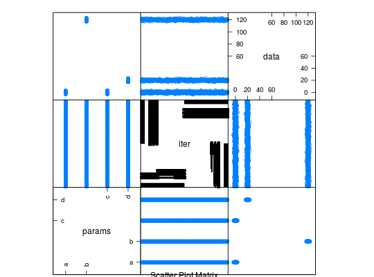

# S4 method for FLPar,missing splom(x, data, ...)
Draws a conditional scatter plot matrix.
See the help page in lattice for a full description
of each plot and all possible arguments.
splom(x,data)
flp <- FLPar(c(t(mvrnorm(500, mu=c(0, 120, 0.01, 20), Sigma=matrix(.7, nrow=4, ncol=4) + diag(4) * 0.3))), dimnames=list(params=c('a','b','c','d'), iter=1:500), units="NA") splom(flp)